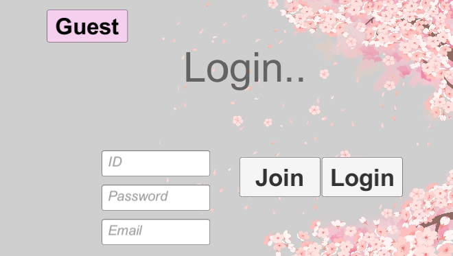
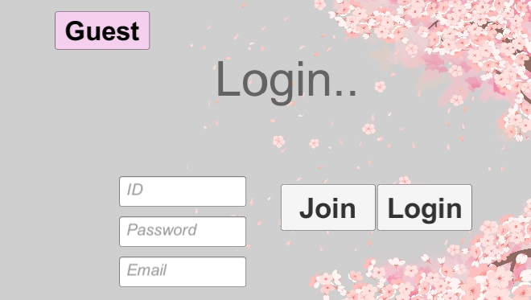

안녕하세요!!
이채은 입니다. 포트폴리오로 어떤 걸 만들까.. 고민을 하다가 여러 보드게임과 FPS게임을 만들어봤습니다.
각각의 게임들을 어떤 기술로 만들었는지 간략히 설명 붙일게요!
일단 게임을 시작하면 첫 화면으로 Fade in, out 기술을 이용해 로고가 뜨고, 로그인 화면이 나옵니다.
NCMB시스템을 이용하여 회원가입과 로그인 기술을 붙였습니다. 하고싶은 아이디와 비밀번호, 이메일을 설명하신 후 Join 버튼을 누르면 회원가입이 완료되며, 기존 아이디가 있으신 분은 아이디와 비밀번호만 치고 Login 버튼을 누르면 로그인이 됩니다. 좀 더 편의성을 위하여 회원가입과 로그인 없이 위에 Guest 버튼을 누르면 바로 Guest 입장도 가능하게 만들었습니다.
로그인을 하고 들어가면 게임 선택 창이 나오는데 Scroll View로 4가지 게임 버튼을 만들었습니다. 옆으로 넘겨가며 원하는 게임을 고르신 후 플레이 하시면 됩니다.
 



이제 게임 하나하나 마다 어떻게 진행이 되는지 알아 볼게요.
밑에 버튼을 하나씩 눌러주세요.